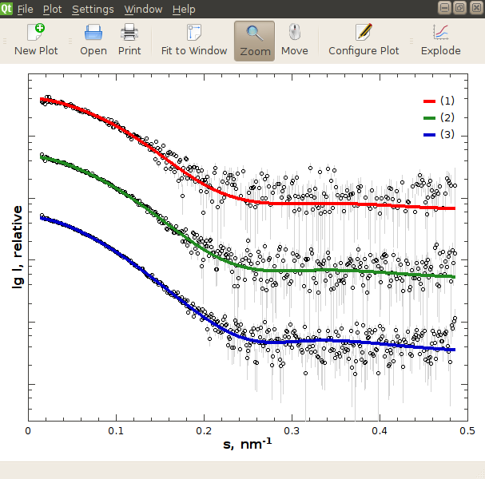
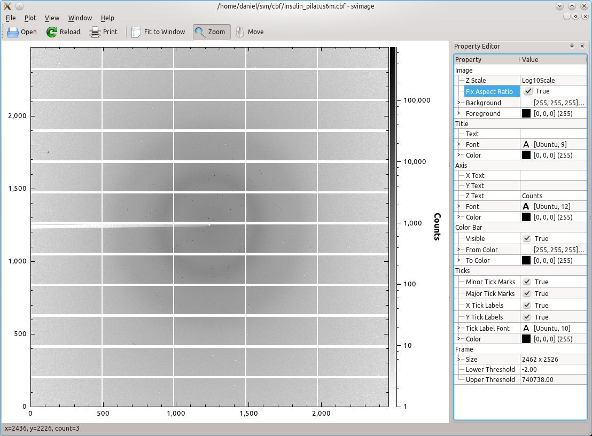

libsaxsdocument, libsaxsimage and saxsview; read, convert and view 1D and 2D-files related to Small Angle X-ray Scattering (SAXS).
Contents
|
saxsview is intended as an day-to-day plotting facility for SAXS-data, as well as a convenient tool to quickly generate plots ready for publication. |
||
|
 Click to enlarge |
saxsview shows 1D-data in .dat, .int, .fit and .fir formats of the ATSAS package, as well as the cansas .xml format (v1.0). The screenshot to the left shows three .fit files. Of the experimental data only every fifth point is shown in black, with error bars in light gray. The respective fits are overlaid as a solid lines. For improved visibility, the fits where stacked or exploded. Most aspects of the plot are configurable. |
|
|
Also, saxsview can display 2D scattering images in Crystallographic Binary Format (CBF, using CBFlib), the ESRF data format (EDF, using edfpack) and images stored in 32-bit TIFFs as written by PILATUS detectors. The screenshot to the right shows an image taken by a PILATUS-6M, which is available for download. In this screenshot, the application shows all pixels with count rate of less than 10 in white, all those with a count rate of 1000 or above in black. Intermediate counts are shown on a logarithmic gray scale. The current x/y position and pixel value (count) are shown in the status bar. |
 Click to enlarge |
|
|
The program is based on Qt - A cross-platform application and UI framework and Qwt - Qt Plotting Widgets for Technical Applications and is thus available for Linux, MacOSX and Microsoft Windows alike. |
||
Suggestions, bug reports and code contributions are highly welcome!
libsaxsdocument and libsaxsimage are the reading and writing workhorses of saxsview. They are meant to allow for easy integration of new 1D and 2D-file formats respectively. Further, if formats that hold similar information implement reading and writing hooks, it becomes very easy to convert between these respective formats, eventually simplifying data-transfer between programs.
For later releases, support for the MAR345 file format is planned.
External dependencies so far; version numbers indicate minimum requirements, earlier versions may work, but are not guaranteed to work. Later version are generally assumed to work:
Optional dependencies which are used if found on the build system:
Dependecies less commonly found (Qwt, CBFlib, edfpack) on average systems come together with the saxsview sources.
As is, it was successfully compiled and used on Linux (i686-pc-linux-gnu), MacOSX 10.5 (Intel-based) and Windows (i686-unknown-mingw).
Please note, depending on your installation location, e.g. /usr/local in Linux, you may need to adjust LD_LIBRARY_PATH as well.
The commands listed here are for a bash-shell on Linux. Similar commands apply for Windows or MacOSX builds:
$> tar xfz saxsview-0.2.0.tar.gz $> cd saxsview-0.2.0 $> mkdir build && cd build $> cmake .. -DCMAKE_INSTALL_PREFIX=/where/to/install $> make $> make test # optional, check that libsaxsdocument works $> make install
The commands listed here are for a bash-shell on Linux. Similar commands apply for Windows or MacOSX builds:
$> svn co https://saxsview.svn.sourceforge.net/svnroot/saxsview/trunk saxsview $> cd saxsview $> mkdir build && cd build $> cmake .. -DCMAKE_INSTALL_PREFIX=/where/to/install $> make $> make test # optional, check that libsaxsdocument works $> make install
The code of the saxsview application is licensed under GPLv3 while the libraries, libsaxsview and libsaxsdocument are licensed under the Lesser GPLv3.
The included and redistributed libraries, Qwt and CBFlib are both available under the LGPLv2.1, which is compatible to the LGPLv3, and edfpack is licensed under the LGPLv3 directly.
Last updated 2010-08-02
{kind=link}
{kind=link}